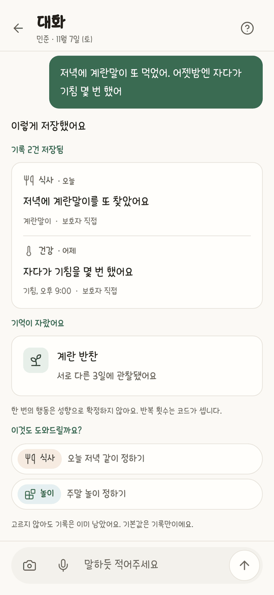

LLM 에이전트 · 백엔드 개발
안녕하세요,
개발자 이도헌입니다.
대규모 언어 모델(LLM)을 쓰는 서비스의 백엔드와 에이전트를 개발합니다. 카카오테크 캠퍼스 4기 팀 프로젝트 아이캐치에서 놀이 추천 에이전트와 AI 품질 평가를 맡았습니다. 알레르기나 월령처럼 틀리면 안 되는 판단은 코드로 처리했고, 실제 모델을 돌리는 평가로 결과를 확인했습니다.
- 이메일hero9573@naver.com
- GitHubgithub.com/03leedo
기술
- Python · FastAPI · asyncio
- 아이캐치 API 서버 안의 놀이 추천 에이전트를 만들었습니다. 날씨, 대기질, 행사 조회를 동시에 보내 응답을 20초 안에 맞췄습니다.
- LLM tool calling · Structured Output
- 모델이 tool로 기록, 장소, 행사를 조회해 후보를 만들고, 결과는 Pydantic 스키마로 받아 코드가 검사합니다.
- pytest · AI 품질 평가(eval)
- 에이전트 단위 테스트 696개를 쓰고, 실제 모델을 돌려 서비스 규칙 위반을 판정하는 평가 하네스를 만들었습니다.
- PostgreSQL · Alembic
- 공원과 도서관 장소 데이터를 적재하고, 추천에 새 칸을 더하는 마이그레이션을 썼습니다.
- Java · Spring Boot · WebSocket(STOMP)
- FarmBroker에서 예상 수익 계산과 AI 작물 추천 API, 실시간 채팅을 만들었습니다.
- React · TypeScript
- FarmBroker의 마켓, 채팅, 공간 상세 화면을 만들었습니다.
대표 프로젝트
아이캐치
보호자가 남긴 한 줄을 기록으로 정리하고, 그 기록을 근거로 식사, 놀이, 일정을 추천하는 육아 서비스
 소개 영상 0:42 · GitHub README에서 재생됩니다
소개 영상 0:42 · GitHub README에서 재생됩니다
- 기간
- 2026.09 – 2026.11 · 10주
- 팀
- 6명 · 카카오테크 캠퍼스 4기 2단계 · 부산대 3팀
- 담당
- 놀이 추천 에이전트(Activity Agent) · AI 품질 평가 · 공공데이터 연동
- 배포
- 웹 · Android 웹뷰 앱. CI를 통과하면 AWS EC2에 자동 배포배포 문서
실서비스는 팀이 서버를 켜 둔 동안에만 열리고, 카카오 계정으로 로그인합니다. 닫혀 있으면 아래 데모로 보실 수 있습니다.
문제 정의
일하면서 아이를 키우는 보호자는 알림장, 일정, 식사, 지난 경험처럼 흩어진 정보를 매번 직접 찾아 연결하고 다음에 무엇을 할지 정해야 합니다. 육아 기록 앱은 이미 있지만 오래 쓰이지 않았습니다.
0/9
아이가 있는 보호자 9명 중 지금 기록을 남기는 사람설문
7/9
하다가 그만둔 사람. 그중 5명이 매일 입력이 번거로웠다
나 다시 볼 일이 없었다
를 골랐습니다설문
8/9
지난 한 달 사이 주말에 아이와 무엇을 할지 검색한 사람설문 제가 맡은 놀이 추천이 다루는 부분입니다
2026년 8월 · 보호자 10명 온라인 설문. 표본이 작아서 방향을 잡는 데만 썼습니다.
그래서 따로 기록하게 하기보다, 보호자가 가족에게 말하듯 남긴 한 줄을 받아 정리하기로 했습니다. AI가 그 한 줄을 식사, 건강, 놀이 기록으로 나눠 저장하고, 쌓인 기록을 근거로 저녁 메뉴나 주말 놀이, 일정을 추천합니다. 추천마다 어떤 기록을 썼는지 보여 주고, 기록이 없으면 일반 추천이라고 표시합니다. 알레르기 필터와 날짜 계산은 모델이 아니라 코드가 맡습니다.
 ① 한 줄 입력
① 한 줄 입력
② 기록 두 건으로 저장 ③ 사용한 기록이 달린 추천
③ 사용한 기록이 달린 추천 ④ 일정은 승인한 뒤 등록
④ 일정은 승인한 뒤 등록
화면: 아이캐치 팀 저장소의 README
데모

실제 앱 · 시연 영상에서 하원길 장면만 자른 것README
보호자가 음성으로 남긴 입력
민준이가 점심을 많이 안 먹었대. 저녁엔 오일째 계란말이만 해달래. 오늘 저녁은 다른 계란 요리 추천해 줘
- 한 줄이 기록 두 건으로 나뉘어 저장됩니다
- 닷새째 계란말이였다는 기록을 근거로 다른 계란 요리를 고릅니다
- 처음 보는 식품은 먹어 본 적이 있는지 먼저 묻습니다
- 일정은 보호자가 누르기 전까지 캘린더에 들어가지 않습니다
담당 역할
평가
AI 품질 점검(eval) 하네스
절대 규칙을 코드로 판정하는 불변식 14개, 능력별 단발 프로브, 일주일 시나리오, 부품 10 × 장애 4의 장애 점검표를 만들었습니다.PR #788eval 문서 실행마다 토큰, 호출 수, 지연 시간을 함께 기록해 하루 입력 한도를 정하는 데 썼습니다.eval 문서 §0 11월 10일 기준선을 잡고, 실패마다 원인을 하나로 좁혀 담당자와 이슈를 연결했습니다.기준선 결과
연동
공공데이터 어댑터
초기
카카오 로그인
첫 주에 카카오 로그인 API 명세를 쓰고, 운영 환경에 키가 없으면 서버가 시작되지 않게 했습니다.PR #19#98
10주 동안 머지한 PR 68개
점 하나가 PR 하나입니다. 9월에는 로그인과 설계 문서, 10월에는 에이전트 본체와 날씨, 11월에는 행사와 장소 연동, 평가를 했습니다.PR 목록 평가 하네스는 PR 하나(+7,808줄)라 점으로는 작게 보입니다. 점을 누르면 그 PR로 갑니다.
표로 보기 · PR 68개
| PR | 머지 | 영역 | 제목 |
|---|---|---|---|
| #19 | 2026-09-10 | 로그인 · 그 밖 | 카카오 로그인 API 명세 v1 추가 |
| #57 | 2026-09-16 | 로그인 · 그 밖 | DB 테스트가 기존 데이터에 영향받지 않게 |
| #58 | 2026-09-16 | 로그인 · 그 밖 | 복귀 URL 이 없으면 서버가 뜨지 않게 |
| #62 | 2026-09-16 | 로그인 · 그 밖 | develop 에서 깨진 정책 버전 테스트 복구 |
| #95 | 2026-09-18 | 로그인 · 그 밖 | 1회용 코드를 발급된 provider 로만 소비하게 |
| #98 | 2026-09-18 | 로그인 · 그 밖 | 운영 환경 카카오 키 누락 시 서버 실행 차단 |
| #162 | 2026-09-28 | Activity Agent | Activity Agent 뼈대와 월령 게이팅 (#160) |
| #159 | 2026-09-30 | Activity Agent | Activity Agent 설계 v1 (#126) |
| #193 | 2026-10-04 | Activity Agent | 위치 · 장소 입력을 공공데이터 적재 설계에 맞춤 (#184) |
| #194 | 2026-10-05 | Activity Agent | 날씨 판정 규칙 — 야외 가능 여부와 등급 라벨 (#185) |
| #195 | 2026-10-05 | Activity Agent | 출력 검증 — 기피 거절 · 중복 · note 검사 · 근거 변환 (#186) |
| #200 | 2026-10-05 | Activity Agent | 위험 용어 사전 — hazard_terms.yaml 과 로더 (#199) |
| #256 | 2026-10-07 | Activity Agent | 놀이 예시 activity_doc 첫 판 7행 · 시드 형식과 검사 (#255) |
| #261 | 2026-10-10 | Activity Agent | 안전 필터를 출력 검증 맨 앞에 — 위험 용어 · health_safety · allergens (#260) |
| #304 | 2026-10-11 | Activity Agent | 놀이 기억 검색 · 문서 행 조회 tool 구현 (#303) |
| #314 | 2026-10-11 | Activity Agent | 위험 용어 height 축 — 높이 오르기 · 매달리기 36개월 미만 경고 (#313) |
| #309 | 2026-10-12 | Activity Agent | 날씨 조회 tool — 네 조회를 묶어 야외 판정 (#308) |
| #312 | 2026-10-12 | Activity Agent | 일정 조회 tool · 관공서 공휴일 (#311) |
| #328 | 2026-10-12 | 공공데이터 연동 | 날씨 어댑터 1부 — 공공데이터 공통 호출 · 기상청 단기예보 (#327) |
| #346 | 2026-10-12 | 공공데이터 연동 | 날씨 어댑터 2·3부 — 대기질 · 자외선 · 특보 · 네 조회 묶기 (#345) |
| #332 | 2026-10-13 | Activity Agent | activity_doc 시드 80행 — 현행 표준보육과정 고시 기준 (#331) |
| #359 | 2026-10-13 | Activity Agent | run() 실구현 — 날씨 사전 조회 · 프롬프트 · 공통 tool 루프 · 안전 필터 뒤 재호출 1회 (#358) |
| #361 | 2026-10-13 | Activity Agent | 근거 다는 법 — 일반 추천은 [예시] 문서 행 · 기억은 고른 이유가 된 것만 (#360) |
| #344 | 2026-10-14 | Activity Agent | [예시] 고르기 — 요청과 겹치는 행 먼저 · 아이와 날짜로 돌림 (#343) |
| #378 | 2026-10-14 | Activity Agent | 후보가 어느 날 하는 활동인지 받아 그날 날씨로 판정 (#377) |
| #383 | 2026-10-14 | Activity Agent | Activity 를 pipeline 에 등록 · entrypoint 가 context 를 만든다 (#380 PR 1) |
| #412 | 2026-10-14 | Activity Agent | health_safety 를 Food · Activity 안전 포트로 읽는 어댑터 (#405 PR A) |
| #416 | 2026-10-14 | Activity Agent | 러너가 health_safety 어댑터를 Activity 에 넘긴다 (#405 PR B) |
| #390 | 2026-10-15 | 공공데이터 연동 | 입력에 흐린 좌표(선택) 받기 · 서버 시작 때 날씨 어댑터를 Activity 에 넘기기 (#380 PR 2) |
| #515 | 2026-10-19 | Activity Agent | 날씨를 묻지 않은 날은 바깥 놀이도 낸다 |
| #517 | 2026-10-20 | 공공데이터 연동 | 병원 찾기 tool · 국립중앙의료원 어댑터 (place_lookup) |
| #557 | 2026-10-25 | Activity Agent | 활동과 맞지 않는 [예시] 문서를 근거로 달면 거절한다 |
| #556 | 2026-10-28 | Activity Agent | Activity · Growth 도 19종 밖 알레르기 식품을 별칭 전부로 막는다 |
| #583 | 2026-10-28 | 공공데이터 연동 | 장소 데이터 적재 · place 테이블과 근처 장소 어댑터 (공원 · 도서관) |
| #590 | 2026-10-28 | Activity Agent | #557 근거 관련성 검사 되돌리기 — 구체적인 요청에 예시를 끼워 내는 억지 추천 |
| #591 | 2026-10-28 | Activity Agent | Activity 근거 지시를 코드와 맞추기 — evidence 를 비우지 않는다 |
| #599 | 2026-10-28 | Activity Agent | 보호자가 놀이를 정해 물은 일반 추천은 문서 행 근거 없이도 저장한다 |
| #606 | 2026-10-28 | Activity Agent | Activity [예시]를 짧은 id 로 보여 주고, 기록 없음 안내를 근거 규칙과 맞추기 |
| #597 | 2026-11-01 | Activity Agent | 놀이를 정해 물으면 그 요청에 맞춰 낸다 — 일반 추천은 막연한 요청에만 [예시] 근거 |
| #600 | 2026-11-01 | Activity Agent | 장소를 추천에 붙이기 — 러너 연결 · 장소가 붙은 추천의 확인 문구 칸 |
| #601 | 2026-11-01 | Activity Agent | 장소가 붙은 추천의 확인 문구(place_notice)를 저장하고 05 · 07 응답에 싣기 |
| #645 | 2026-11-01 | Activity Agent | Activity 날씨 조회에 실패해도 바깥 놀이를 막지 않고 확인을 맡긴다 |
| #653 | 2026-11-01 | Activity Agent | 보호자가 놀이를 정해 물은 Activity 일반 추천을 05 에도 낸다 — requested 를 행에 남긴다 |
| #655 | 2026-11-01 | Activity Agent | 추천별 위험 경고를 그 추천의 칸(warnings)으로 싣는다 (#402) |
| #657 | 2026-11-02 | Activity Agent | 보호자가 말한 지역으로 장소 · 날씨를 본다 — 위치 없이도 장소가 붙는다 |
| #664 | 2026-11-02 | Activity Agent | 장소 이름의 "~에서" 중복과 (예1) 표기를 고친다 (QA · #606) |
| #656 | 2026-11-05 | Activity Agent | 추천별 위험 경고(warnings)를 저장하고 05 · 07 응답에 싣는다 (#402) |
| #668 | 2026-11-06 | 공공데이터 연동 | Activity 가 그날 열리는 축제 · 공연 · 행사를 찾아 추천에 붙인다 (TourAPI) |
| #669 | 2026-11-06 | 공공데이터 연동 | TourAPI 행사 어댑터를 만들어 Activity 에 넘긴다 |
| #676 | 2026-11-06 | Activity Agent | Activity 지역 찾기 — 명소 이름 앞 지역을 떼어 쓰지 않고, 일산 · 광주 · 시+구 이름을 찾는다 (#657 리뷰) |
| #677 | 2026-11-06 | Activity Agent | 행사가 붙은 추천에 행사 기간(시작일 · 종료일) 칸을 싣는다 (#516) |
| #701 | 2026-11-06 | Activity Agent | 행사가 열리는 날을 기간이 아니라 일정 원문으로 본다 (요일 · 휴무 · 날짜별 장소) |
| #741 | 2026-11-06 | 공공데이터 연동 | Health 가 병원 찾기 위치와 병원 어댑터를 받는 자리를 만든다 (#713) |
| #742 | 2026-11-06 | 공공데이터 연동 | 서버 시작 때 병원 어댑터를 만들어 입력 run 의 Health 에 넘긴다 (#713) |
| #743 | 2026-11-09 | Activity Agent | Activity 후보에 음식 칸(foods)을 두고 Food 판정으로 거른다 (#582) |
| #788 | 2026-11-09 | AI 품질 평가 | AI 품질 점검 v1 — §2 불변식 · 단발 프로브 31 · 일주일 시나리오 · 장애 점검표 (#777) |
| #805 | 2026-11-09 | Activity Agent | Activity: 다른 날 놀이는 그날로 판정하고, 해 진 뒤에는 놀이터만 뺀다 (#800) |
| #820 | 2026-11-09 | Activity Agent | Activity: 장소를 고른 이유를 아이 상태로 먼저 쓰고, 이름만 보고 시설을 지어내지 않는다 (#814) |
| #821 | 2026-11-09 | 로그인 · 그 밖 | 날짜 뒤 요일 괄호("11월 27일(금)")를 읽고 요일로 검산한다 (#797) |
| #841 | 2026-11-10 | 로그인 · 그 밖 | 선생님 · 알림장이 전한 급식 먹은 양을 급식 갱신으로 보낸다 (#798) |
| #853 | 2026-11-10 | Activity Agent | "다른 행사 추천해줘" 를 앞 대화로 이어 찾고 이미 보여 준 추천을 다시 내지 않는다 (#852) |
| #856 | 2026-11-10 | Activity Agent | Activity: 막연한 요청에 행사 · 장소 · 다른 결을 섞고, 위치가 없으면 이유를 알린다 (#855) |
| #858 | 2026-11-10 | 공공데이터 연동 | Activity: 박물관 · 과학관 · 체험관을 TourAPI 시 · 도 목록에서 찾는다 (#857) |
| #870 | 2026-11-10 | 공공데이터 연동 | Activity: 단기예보 범위 밖의 날(주말)을 기상청 중기 육상예보로 본다 (#869) |
| #930 | 2026-11-10 | AI 품질 평가 | 11-10 골든셋 기준선 — 헤드라인 8/10 · 불변식 위반 0 |
| #906 | 2026-11-11 | Activity Agent | Activity: 행사 일정 읽기를 날씨와 같이 미리 시작하고 시간 상한을 둔다 — 캐시가 빈 첫 run 이 20초를 넘지 않게 (#905) |
| #964 | 2026-11-11 | 공공데이터 연동 | 날씨 — 자외선 · 대기질 · 특보 · 중기예보도 동시 조회의 실패를 같이 받는다 (#962) |
| #969 | 2026-11-11 | Activity Agent | Activity — 행사를 물었는데 그날 열리는 행사가 없거나 모자라면 알린다 (#968) |
Activity Agent 처리 흐름
팀은 기능마다 누가 맡을지를 먼저 정했습니다. 되돌릴 수 없는 일은 사람이 승인하고, 항상 맞아야 하는 계산과 필터는 코드가, 놀이 후보를 만드는 일은 LLM이 맡습니다. 아래는 Activity Agent가 요청 한 줄을 처리하는 순서입니다.
이번 주말에 밖에서 놀 만한 데 있을까?
- 코드 0
- LLM 0
- 사람 0
-
LLM
Supervisor가 요청인지 기록인지 가른다
모델이 의도를
요청형
으로 보고 놀이를 맡는 Activity에 넘깁니다. 맡길 Agent는 최대 2개입니다.의도: 요청형 → agent: activity
-
코드
모델을 부르기 전에 날씨부터 본다
단기예보, 대기질, 자외선, 특보를 동시에 조회하고, 나들이를 물었으면 근처 행사 읽기를 같이 시작합니다. 주말은 하루라도 바깥이 되면 엽니다.
토 바깥 가능 · 일 비 → 주말 바깥 열림
-
코드
월령으로 열 tool을 정한다
나이 계산은 모델에게 묻지 않습니다. 36개월이라 관심 프로필 조회가 열리고, 위치가 있어 장소와 행사 조회도 열립니다. 월령에 맞는 [예시] 문서 5행을 고릅니다.
열린 tool: 기억 · 날씨 · 일정 · 장소 · 행사
-
LLM
모델이 tool을 불러 후보 3개를 만든다
놀이 기억, 근처 장소, 그날 행사를 조회하고 마지막에 한 번 후보를 제출합니다. 알레르기 이름은 프롬프트에 싣지 않습니다.
① 공원에서 낙엽 모아 왕관 만들기 ② 가을 축제에서 인형극 보기 ③ 쿠키 반죽 빚어 굽기 체험
-
코드
안전 필터를 가장 먼저 적용한다
위험 용어 사전을 월령과 대조하고, 후보의 음식 칸은 Food 메뉴 판정으로 봅니다. 걸린 후보는 고치지 않고 뺍니다. 모델에게는 사유 없이 제외 목록만 주고 한 번 더 부릅니다. 사유를 알려 주면 단어만 바꿔 빠져나가는 법을 가르치게 되기 때문입니다.
③ foods: [쿠키] → 밀 → 제외 재호출 1회 → ③ 도서관에서 가을 그림책 읽기
-
코드
조회 결과에 없는 이름은 거른다
장소와 행사 이름은 이번 조회 결과에 있는 것만, 행사는 그날 실제로 열리는지 일정 원문으로 봅니다. 근거 id는 조회가 돌려준 것만 받고, 7일 안에 한 놀이는 다시 내지 않습니다.
장소 ✓ · 행사 일정 ✓ · 근거 id ✓ · 최근 중복 ✓
-
사람
보호자가 고르고, 일정은 승인해야 들어간다
추천에는 이유와 사용한 기록이 붙습니다. 캘린더에 넣는 것은 되돌리기 어려워서 보호자가 누르기 전에는 저장하지 않습니다.
예시 결과
OO근린공원에서 낙엽 모아 왕관 만들기
추천 이유지난주 낙엽 놀이 기록이 두 번 있어요. 토요일은 맑아서 바깥에서 하기 좋아요.
사용한 기록 2건 · 낙엽 밟기 놀이 · 공원 산책
이 놀이를 토요일 일정으로 넣을까요? 넣기
실제 호출 화면이 아니라 설계 문서의 실행 흐름과 출력 검증 순서를 따라 다시 그린 것입니다. 아이 정보와 후보는 지어낸 예시입니다.설계 문서 §3
예외 처리
외부 API가 실패하거나 모델이 예상과 다르게 답할 때의 동작도 코드로 정했습니다. 확인하지 못한 정보는 확인하지 못했다고 표시합니다.
- 날씨를 못 읽었다
- 바깥 놀이를 막지 않고
날씨를 확인하지 못했어요
를 붙입니다. 결과에는 일부만 확인했다는 표시(degraded)를 남깁니다.PR #645 - 안전 정보를 읽을 길이 없다
- 추천을 만들지 않고 닫습니다(blocked). 알레르기를 모르는 채로
없음
으로 넘기지 않습니다.설계 문서 §3-2 - 후보가 전부 안전 필터에 걸렸다
- 한 번 더 부르고, 그래도 없으면 예시 문서로 채우지 않고 안내만 냅니다. 요청한 음식이 막혔으면 보호자가 쓴 말로 그 사실을 알리고, 등록한 알레르기 이름은 싣지 않습니다.PR #743
- 모델이 tool 대신 말로 끝냈다
- 실패(failed)로 끝냅니다. 모델이 쓴 문장은 화면에 내지 않습니다.설계 문서 §3-2
- 조회 결과에 없는 장소 이름을 썼다
- 그 후보를 거절해 모델이 다시 쓰게 합니다. 장소 이름은 이번 조회 결과에 있는 것만 받습니다.설계 문서 §3-3
- 행사 일정 읽기가 늦다
- 이번 결과에서만 빼고
행사 일정을 아직 확인하고 있어요
라고 알립니다. 읽기는 뒤에서 이어 가 다음 질문이 캐시를 씁니다.PR #906
트러블슈팅
개발하면서 겪은 문제 중 세 가지를 골랐습니다. 각 항목에 문제, 해결, 리뷰 반영, 배운 점과 변경 전후 수치를 적었습니다.
근거 검사 · 프롬프트
근거 검사를 추가한 뒤 늘어난 억지 추천
- 문제
- 일반 추천
종이컵 쌓기
에 상관없는노래하며 손 씻기
문서가 근거로 붙었습니다. 그래서 관련성 검사를 추가했는데, 함께 바꾼 프롬프트 지시 때문에 모델이 예시 문서를 베낀 추천을 더 많이 냈습니다.PR #557 - 해결
- 변경을 되돌리고, 영향 범위를 확인하지 않은 것이 원인이었다고 PR에 적었습니다. 이후 보호자가 놀이를 정해 물으면 그 요청에 맞춰 추천하도록 다시 설계했습니다.PR #590#597
- 리뷰 반영
- 리뷰어가
모델이 요청 놀이 칸을 지어 넣으면 근거 검사를 면제받는다
고 지적했습니다. 보호자가 실제로 쓴 문장에 그 놀이가 있을 때만 면제하도록 고쳤고, 재리뷰에서놀이 추천해줘
가 여전히 통과한다는 지적을 받아 날짜, 장소, 날씨 낱말을 뺀 나머지 낱말이 모두 있어야 하도록 조건을 좁혔습니다.기록 - 측정 후 결정
- 후보가 요청에 맞는지 코드로 막기 전에 먼저 측정했습니다. 요청 기반 후보 391개를 다른 모델로 판정하고, 판정 모델을 믿을 수 있는지 보려고 일부러 엇갈리게 붙인 대조군 120개를 함께 넣었습니다. 관계없는 후보가 1건뿐이어서 코드 검사는 추가하지 않았습니다.기록
- 배운 점
- 프롬프트 지시 한 줄이 코드 검사보다 결과를 크게 바꿀 수 있다는 것을 알았습니다. 이후에는 바꾼 것을 하나씩 나눠, 같은 케이스로 변경 전후를 측정합니다.
안전 · 알레르기
알레르기 필터의 누락과 오탐
- 문제
- 놀이 문장에서 알레르기 식품 이름을 글자로 찾았더니
장난감 자동차
가 감자로 걸렸고, 밀 알레르기 아이에게쿠키 반죽 빚어 굽기
는 통과했습니다.기록 - 해결
- 사례 몇 개가 아니라 시드 데이터 전체(놀이 80행, 교육 104행 × 식품 이름 77개)로 회귀 테스트를 걸어 오탐을 없앴습니다.PR #556 그래도 요리 이름은 계속 빠져나가서 출력 구조를 바꿨습니다. 후보에 음식 칸을 두고, 그 칸을 Food 에이전트의 메뉴 판정으로 거릅니다. 알레르기 이름은 여전히 모델에 보내지 않습니다.실험 #582PR #743
- 리뷰 반영
- 리뷰어가 Food의 식품 별칭을 놀이 문장에 그대로 쓰면 사과 알레르기 아이에게
친구에게 사과하기
가 막힌다고 지적했습니다. 문장용 규칙을 따로 두고, 함께 쓰는 매처에 띄어쓰기를 넘지 않는 옵션을 더하는 것은 API 파트와 상의해 정했습니다.기록 - 배운 점
- 전체 데이터로 회귀 테스트를 걸어야 숨은 오탐이 보였습니다. 글자 대조에서 누락이 반복될 때는 규칙을 늘리기보다 모델이 채우는 출력 구조를 바꾸는 편이 나았습니다.
class ActivityCandidate(ToolArgs):
content: str # 놀이 후보. 예: 종이컵으로 탑 쌓기
materials: list[str] # 쓰는 물건을 빠짐없이
foods: list[str] # 만지거나 먹는 음식을 하나씩.
# 안전 검사는 코드가 이 목록으로 한다
involves_food: bool # true 인데 foods 가 비면 다시 적게 한다지연 · 20초 예산
캐시가 빈 첫 요청의 20초 초과
- 문제
- 캐시가 빈 첫 실행에서
주말에 갈만한 행사 추천해줘
가시간 안에 답을 만들지 못했어요
로 끝났습니다. Activity Agent만 17~19초가 걸려 앞 단계까지 더하면 20초를 넘었습니다.PR #906 - 해결
- 행사 일정 읽기를 날씨 조회와 동시에 시작하고 시간 상한을 뒀습니다. 마감이 가까우면 마지막 후보 작성에 6초를 남기고, 못 읽은 행사는 이번 결과에서만 빼고 백그라운드에서 캐시를 채웁니다.PR #906
- 리뷰 반영
- 요청에 지역 이름이 있으면 미리 읽기를 하지 않게 했고, 결과가 비었을 때
새 행사 없음
이 아니라아직 확인 중
이라고 알리도록 고쳤습니다.PR #906 - 배운 점
- 느린 외부 호출은 끝까지 기다리지 않고 시간 상한을 둡니다. 이번에 못 읽은 결과는 백그라운드에서 캐시에 채워 다음 요청에서 쓰게 했습니다.
결과
제가 만든 평가 하네스로 실제 모델을 돌려 측정한 팀 전체 결과입니다.
설계 문서
구현 전에 설계 문서를 먼저 써서 리뷰를 받았습니다. 결정과 이유가 문서에 있어서 리뷰어가 코드를 읽기 전에 방향을 확인할 수 있었습니다.
-
Activity Agent 설계 v1
결정 12개(D1–D12), 실행 흐름, 출력 검증 순서, 코드가 막는 안전 규칙, 테스트 계획. 코드가 0줄일 때 먼저 써서 리뷰를 받았습니다.PR #159
-
AI 품질 점검 설계 (eval v1)
하네스 1개와 스위트 4개, 절대 규칙을 코드로 판정하는 불변식 14개. 한 줄짜리 시나리오 10개로는 승격 · 낡은 기억 · 정정 같은 여러 날의 성질을 못 봐서 구조를 다시 짠 이유를 적었습니다.PR #788
-
카카오 로그인 API 명세 v1
프로젝트 첫 주에 쓴 로그인 흐름과 엔드포인트 명세입니다.PR #19
-
장애 점검표
부품 10개 × 장애 4가지 = 40칸 지도. 기존 테스트가 이미 판정하는 칸을 먼저 찾고 남은 구멍만 테스트로 메웠습니다.eval 문서 §0
PR 본문에는 리뷰에서 봐주셨으면 하는 곳
과 전후 측정표를 같이 적었습니다.예: PR #906
기술 스택
제가 직접 쓴 기술
팀 전체 스택
방금 저장한 기록이 같은 요청의 추천 근거로 잡혀야 해서 백엔드와 AI를 한 서비스로 묶었고, 벡터 DB를 따로 두지 않고 PostgreSQL 한 곳에 두었습니다.README
그 밖의 작업
다른 프로젝트
제7회 PNU 창의융합 AI 해커톤 · 우수상(3위)
FarmBroker
도심 유휴공간, 도심 농부, 소비자를 잇는 스마트팜 중개 플랫폼입니다. 저는 예상 수익 계산과 KAMIS 도매가 수집, Gemini 작물 추천을 서비스 API에 연결하고 STOMP 실시간 채팅과 마켓, 채팅 화면을 만들었습니다.커밋 117개 배포 환경에서만 끊기던 채팅은 Origin 헤더를 바꿔 가며 응답을 비교해 허용 출처 설정 문제임을 찾았습니다.후기
NoticeDelta
정정공고가 나오면 내 자격, 마감, 금액이 바뀌었는지만 알려 주는 지원사업 알림 도구입니다. 자격은 코드로 판정하고 판정마다 원문 근거를 붙이며, 바뀐 문단에 걸린 항목만 다시 추출합니다.
저장소 →TrustLens
이미지의 진위를 여러 방법으로 분석하는 Android 앱입니다. AI 생성 가능성, 동일 이미지 검색, EXIF, ELA 결과와 직접 학습한 TFLite 품질 모델을 한 리포트로 묶습니다.
저장소 →LoL AI Platform
Riot API 데이터로 경기 타임라인을 분석하고 승률을 예측해, 에이전트가 코칭 리포트를 써 주는 게임 분석 서비스입니다.
저장소 →수상 · 교육
수상
-
2026.08
제7회 PNU 창의융합 AI 해커톤 우수상(3위)
지정과제트랙 · 5인 팀 · FarmBroker
-
2026
카카오테크 캠퍼스 4기 아이디어톤 우수상
교육
-
2026.05 – 11
카카오테크 캠퍼스 4기 Agentic AI 과정 수료
프리코스 과제, 1단계 학습, 2단계 팀 프로젝트(아이캐치 · 6인 · 10주)
-
재학 중
부산대학교 정보컴퓨터공학부